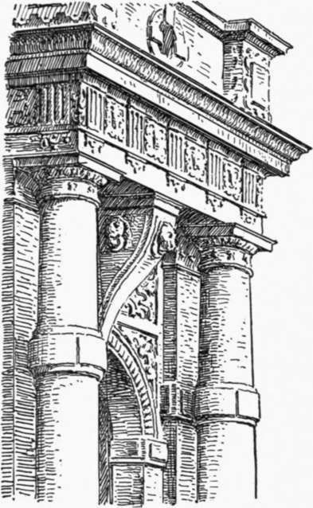

Renaissance In England. Part 3
Description
This section is from the book "Character Of Renaissance Architecture", by Charles Herbert Moore. Also available from Amazon: Character of Renaissance Architecture.
Renaissance In England. Part 3
The gatehouse at Tixall1 has a plain front of three stories with a projecting bay over the portal, and angle towers. The window openings are all of the broad mullioned Elizabethan type, and the fagade as a whole would be admirable if it had nothing more. But the Renaissance ideas led the designer to crown each story with an entablature, and to set a pair of classic columns on either side of the central bay, and in each tower angle. To cover these useless columns the entablature has to be broken into deep ressauts, and the three superimposed pairs carry nothing but a pedestal block above the main cornice, the several pedestal blocks being connected by a balustrade.
1 Gotch, plate 92.
The gatehouse of Stanway1 has a portal with a four-centred arch framed with a shallow Doric order, having a pilaster with a free-standing column in front of it on either side. The entablature has a double ressaut over each of these compound members, and a curved pediment over the entablature is likewise broken into ressauts. A rectangular tablet with an escutcheon, surmounted by a smaller pediment, breaks through the middle of the larger pediment, and acroteria are set on its sides, while a keystone in the arch carries a shallow ressaut in the entablature. The front of West wood Park2 is for the most part free from foreign elements, but it has a porch in the form of a Roman triumphal arch with three openings, and a Corinthian order of almost correct ancient proportions.
A remarkable illustration of the architectural taste of this time is afforded by the well-known Gate of Honour at Caius College, Cambridge. A triumphal arch scheme with an Ionic order, a Tudor arch, no openings in the lateral bays, and no attic, is surmounted with a Greek temple front of an engaged Corinthian order raised on tall pedestals connected by an engaged balustrade. This embraces in width only the central bay of the substructure, and solid abutments of concave outline are carried up over the side bays. A plain attic over the pediment of the temple forms the base for a square pyramid intersected by a tall hexagon, surmounted with a hexagonal dome. No voids, except the central opening under the Tudor arch, break the solid mass, but the wall surfaces are ornamented with disks, niches, entablatures, and small pediments in relief; and the pedestals of the temple order are carried on corbels and ressauts in the lower entablature.
Of the many English houses built at the close of the sixteenth century, few are more tasteless and pretentious than Wollaton Hall,3 built by Sir Francis Willoughby "at great expense, it was said, for a foolish display of his wealth." An order of coupled pilasters, broken in the middle by salient blocks, adorn each story, while vacant niches in the upper stories break the narrow wall surfaces between the pilasters on either side of the large mullioned windows. The chimney-stacks are, as in Longford Castle, shaped in the semblance of pseudo-Doric columns, and the square angle pavilions have their cornices adorned with false pediments of capricious outline and strap-work ornamentation, flanked by obelisks on tall pedestals. One other feature of this remarkable design is perhaps worthy of notice, namely, the portal of the north front. This portal has a low arch, and is sheltered by a porch in the form of a massive free-standing Doric order, the shafts of which are broken in the middle by a salient drum, and the middle of the entablature is supported by a heavy console which forms, at the same time, a monstrous keystone to the arch (Fig. 132).
Fig. 132. —Portal of Wollaton Hall.
1 Gotch, plate 82. 2 Ibid., plate 86. 3 Ibid., plate 143.
It is unnecessary further to multiply examples. While one great house of the period differs from another in unimportant ways, those in which ornaments are extensively applied are without exception disfigured by them. The Elizabethan architectural ornamentation is at once pretentious and grotesquely ugly. It was only in so far as they held to a straightforward provision for domestic needs, and avoided architectural pretensions, that the English people of the Elizabethan Age produced really good domestic architecture.
Toward the close of the sixteenth century many Flemish and Dutch ornamental workers had come into England, and had brought in the tasteless forms of design that had been current with them. The ungrammatical and inelegant misuse of the orders, and the meaningless barocco scrollwork, with which the Elizabethan houses were overloaded, may be largely due to them. But these modes of design were readily assimilated by the native English workmen, and approved by the aristocratic . English taste. The architect, in the more modern sense, did not yet exist. The design and execution of these buildings were in the hands of the master builders. No complete drawings were prepared in advance. Only the general scheme in rough sketches of plans and elevations was furnished, and these were freely modified, and the details developed, as the work proceeded under the direction of the master mason. It was a survival of the mediaeval system, and no better system could be devised so long as the workmen were suitably trained to their craft, worked together on traditional lines, and were governed by a common understanding, common aims, and a strong feeling of artistic fellowship. But the Elizabethan workmen were not thus associated and governed. The older traditions of design had been largely lost, and the builders were attempting to use architectural forms which they did not understand. The aberrations that resulted from the efforts of these craftsmen to use the classic orders were ludicrous, as we have abundantly seen. The orders were entirely foreign to the genius and to the requirements of the English people, and were altogether out of place in English house building. Their departure from their own proper traditions and architectural habits at length weakened the building craftsmen, so that they finally lost their occupation with the rise of the modern professional architect, who first appeared in England in the person of Inigo Jones, whose work we may consider in the next chapter.
Continue to:
- prev: Renaissance In England. Part 2
- Table of Contents
- next: Chapter XIV. Architecture Of The Renaissance In England. II. Jones And Wren